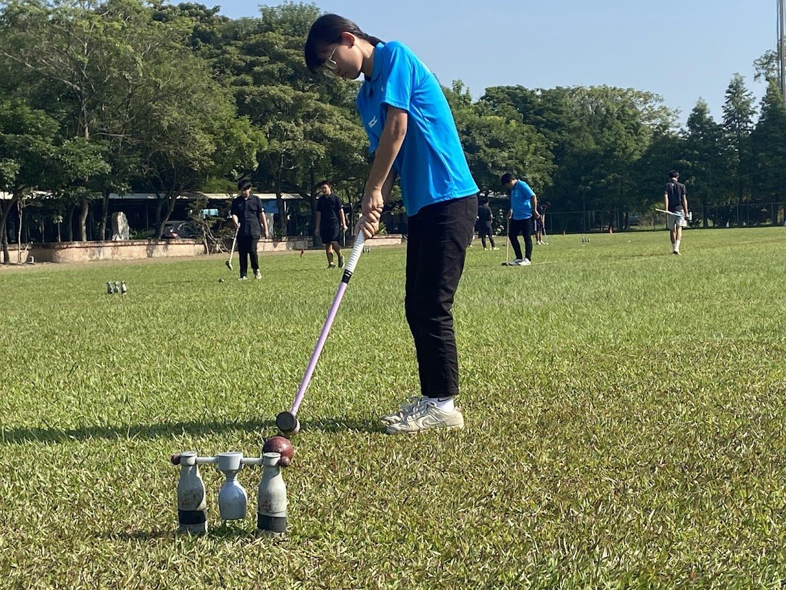
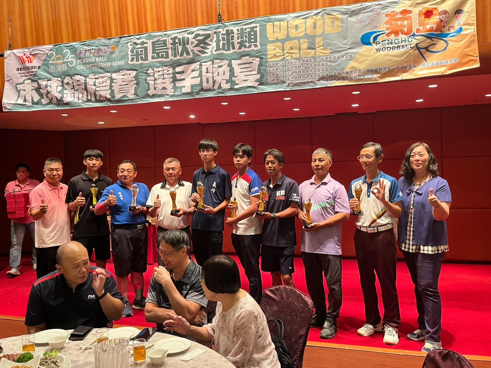

01我的故事
為使木球運動專長學生，發揮潛能、培養自信，培養運動對身心健康至極重要，造福弱勢學生，使其從事正當的休閒娛樂，進而找到生活的重心。本計畫針對本校木球運動代表對弱勢學生，作為期150天的木球運動專長訓練，木球運動培訓課程申請。木球隊成立於2011年由亞洲盃國家代表隊張世杰主任、亞洲大學國家代表隊蔡堡樺領軍，從此義峰高中木球隊這隻鳳凰再次浴火重生，多年來奪得全國中等學校運動會木球項目高男組球道賽、雙人桿數賽前三名，國內年度大賽也獲得第一名佳績，並從2011年開始每年皆培養出國家代表隊選手且在國際上發光發熱。


推薦理由
根據台灣各大企業最愛新鮮人之人格特質之調查，企業最重視社會新鮮人人格特質前三名分別為：一、學習意願強、可塑性高，二、團隊合作能力佳，三、穩定度與抗壓性高。企業選才時著重的不只是學歷而是「態度」，若缺乏團隊合作的能力將影響機構或企業的發展，高達四分之三的企業主認為，社會新鮮人缺乏穩定度與抗壓性，雇用後造成人事流動率及訓練成本增加，而這些工作場域所需人才的特質與成為傑出運動員所需的人格特質相符。根據研究顯示優秀運動員有較高的利他精神、團隊合作能力、高樂群姓、心理韌性、穩定性抗壓性與挫折忍耐度等，正式現代社會需要的人才特質。
雲林縣義峰高中對於學生多元發展及全人教育十分關注，在校方的持續支持及地方社區的相挺的努力下，約600位學生的義峰高中已發展出具有國際競爭力及學校特色之運動代表隊，其中木球隊更在世界盃、亞洲盃、全國中等學校運動會等國內外大賽榮獲耀眼成績。而本校所教育出學生的專業能力已深獲社會各界肯定，若能鼓勵更多對運動有興趣之學生加入運動代表隊之組訓，在高中期間除學期專業科別的知識、技能，考取專業證照外，更可藉由參與校隊來強健體魄、磨練心智及強化團隊合作表現，以培養出優秀運動員的特質，成為國家及社會所需的優質人才。